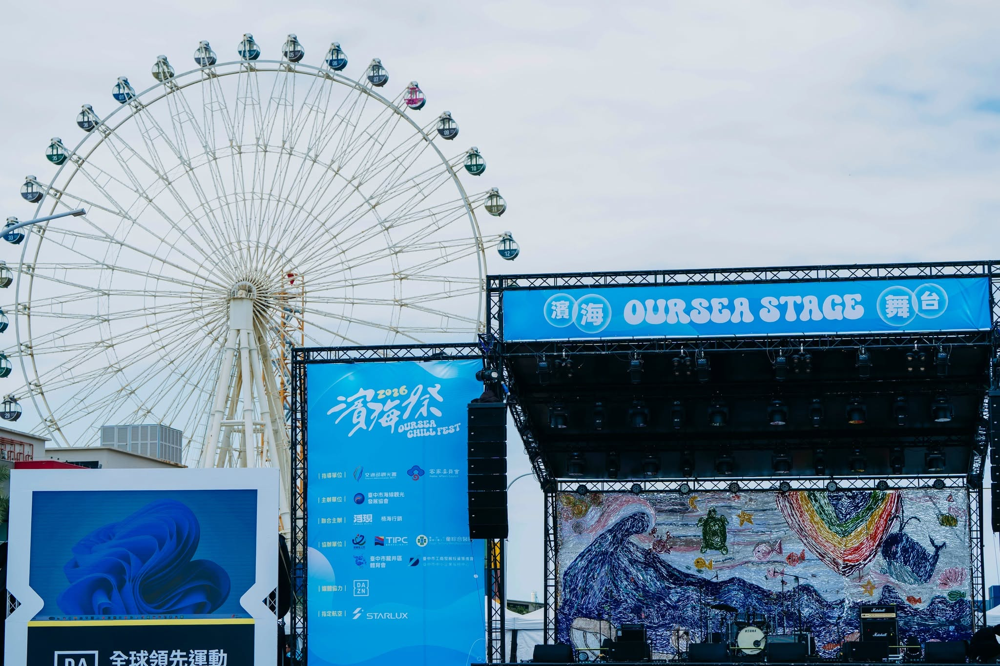
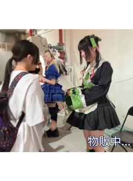

地下偶像的定義
地下偶像（日文：地下アイドル）通常具有以下特徵：
小型場館演出
主要在規模較小的 Live House 活動。
以現場演出為主
相較於傳統大眾媒體曝光，更重視現場演出。
與粉絲距離近
重視與粉絲之間的近距離交流。
尚未主流出道
通常尚未以主流偶像的形式出道。
電視曝光較少
沒有在日本地上波電視台擁有固定節目。
大型公演不易
難以持續舉辦 2,000 人規模的演出。
地下偶像的魅力在於現場演出與粉絲之間的互動，也是日本偶像文化中獨具特色的一環。
活動形式
地下偶像的活動不只有舞台演出， 也會透過各式活動與特典會和粉絲交流。
現場演出
以 Live House、展演空間等場地 進行現場演出。

活動演出
除了單獨公演，也會參與主催、 拼盤、音樂祭等不同活動。

特典會・物販
演出前後可能進行周邊販售、 拍立得拍攝及粉絲交流。
不同偶像、團體及活動的演出與特典會形式皆有所不同， 實際參加活動前，請以主辦單位或偶像官方 SNS 公布的資訊為準。
台灣地下偶像的特色
台灣地下偶像文化深受日本影響，並在本地的表演環境中，發展出自己的樣貌。
從女僕咖啡廳出發
早期店內常見動漫歌曲翻唱與唱跳表演；隨著演出逐漸發展，部分表演者也開始推出原創歌曲。
不只一種舞台
從專場、拼盤活動到 Live House、動漫活動與音樂祭，演出場域持續拓展。
從翻唱開始，唱出自己的舞台
日文歌曲與動漫歌曲翻唱，是台灣地下偶像演出中常見的形式。部分表演者也會為了詮釋喜愛的歌曲而學習日文、練習發音與理解歌詞；另一方面，少部分表演者開始推出原創歌曲，探索自己的音樂風格。
熱愛之外的現實
練習、籌備周邊、聯繫活動與經營社群都需要時間。不少表演者仍需兼職或其他工作，付出與收入也未必成正比。
不同活動與場地對現場應援及觀眾行為的規範皆有所不同， 參加活動時請以主辦單位及場地方公布的規則為準， 並注意自己與其他觀眾的安全。
常見分類
台灣地下偶像的營運方式與活動形式相當多元。 本站為方便介紹，將常見類型整理如下。
企業偶像
由公司、經紀團隊或組織負責企劃、 營運與活動安排的偶像或團體。
VIEW MORE → INDEPENDENT自營偶像
由成員自身參與或主要負責營運、 企劃與活動安排的偶像或團體。
VIEW MORE → SOLO IDOL個人偶像
以個人身分進行偶像活動與 舞台演出的表演者。
VIEW MORE → SHOP IDOL店鋪偶像
由女僕咖啡廳等店鋪所企劃、 推出的偶像表演團體。
VIEW MORE →本站為方便介紹，依台灣地下偶像常見的營運背景與活動形式 整理為以上類別。由於營運方式與活動形式可能互相重疊， 同一位偶像或團體也可能同時具有多種類型的特徵， 因此本站分類並非絕對。